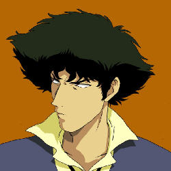
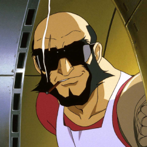
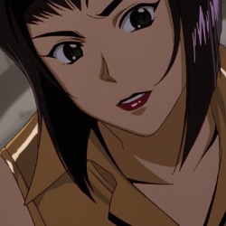
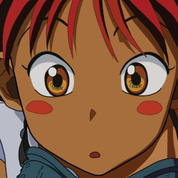
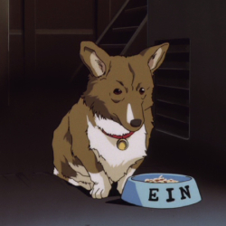

Personajes Principales
-
Spike Spiegel
Spike Spiegel es el protagonista de "Cowboy Bebop", un cazarrecompensas con un aspecto distintivo, cabello oscuro, traje elegante y una actitud relajada. Es un maestro del combate, con un pasado misterioso relacionado con organizaciones criminales y un amor perdido llamado Julia. Su carisma y estilo único lo convierten en un personaje icónico en la historia del anime, mientras lidera la tripulación de la nave espacial Bebop en la caza de recompensas a lo largo del espacio.
-
Jet Black
Jet Black es un cazarrecompensas y el capitán de la nave espacial Bebop. Jet es un hombre de mediana edad con una gran cicatriz en su ojo izquierdo y una barba. Tiene un carácter más serio y paternal en comparación con Spike. Su mano derecha es una prótesis mecánica, lo que lo hace hábil en el mantenimiento de la nave. Jet es un exdetective de la fuerza policial y tiene un fuerte sentido de la justicia. A lo largo de la serie, su experiencia y sabiduría son valiosas para el equipo en la caza de recompensas y en la resolución de misterios.
-
Faye Valentine
Faye Valentine es una cazarrecompensas con un atractivo físico destacado, cabello violeta y un estilo de vestimenta provocativo. Faye es conocida por su personalidad audaz y desinhibida, con un carácter independiente y misterioso. A lo largo de la serie, se descubre que Faye tiene una amnesia parcial y está tratando de recuperar su pasado. Su habilidad en el juego y la astucia son importantes para el equipo en la caza de recompensas. Faye añade un toque de humor y sensualidad a la serie, y su personaje es complejo debido a su búsqueda de identidad y pertenencia.
-
Ed
Ed, cuyo nombre completo es Edward Wong Hau Pepelu Tivrusky IV, es un personaje excéntrico en "Cowboy Bebop", conocida por su habilidad en la informática, su personalidad enérgica y su estilo de vestimenta peculiar. Aporta un toque de humor y caos a la serie como hacker prodigio, siendo una parte esencial del equipo de cazarrecompensas de la nave Bebop.
-
Ein
Ein es un personaje especial en "Cowboy Bebop" a pesar de ser un perro. Es un Corgi galés de Pembroke inteligente y modificado genéticamente, lo que le otorga una inteligencia y habilidades fuera de lo común. Ein se une a la tripulación de la nave Bebop y a menudo se involucra en las aventuras del equipo. Su apariencia adorable y su astucia aportan un elemento único y cómico a la serie, y a pesar de ser un perro, se convierte en un miembro querido y valioso del grupo.
{kind=link}
{kind=link}
{kind=link}
{kind=link}
{kind=link}